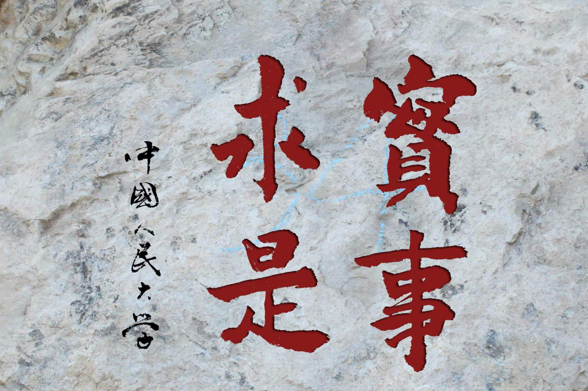

中国人民大学的精神传统

释义
指从实际对象出发，探求事物的内部联系及其发展的规律性，认识事物的本质。通常指按照事物的实际情况办事。
出处
《汉书·河间献王刘德传》:“修学好古，实事求是。”
在百科释义当中，实事求是指从实际对象出发，探求事物的内部联系及其发展的规律性，认识事物的本质。通常指按照事物的实际情况办事。毛泽东在《改造我们的学习》中指出：“实事”就是客观存在着的一切亊物，“是”就是客观亊物的内部联系，即规律性，“求”就是我们去研究。 毛泽东认为，“是”就是事物的规律，“求是”就是认真追求、研究事物的发展规律，找出周围事物的内部联系，作为我们工作的向导。毛泽东还解释说：学习马克思主义要“有的放矢”，“的”就是中国革命，“矢”就是马克思列宁主义。中国共产党人之所以要找“矢”，就是为了要射中国革命这个“的”。这种态度就是“实事求是”的态度。“这种态度，有实事求是之意，无哗众取宠之心。这种态度，就是党性的表现，就是理论和实践统一的马克思列宁主义的作风”。